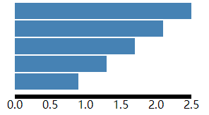
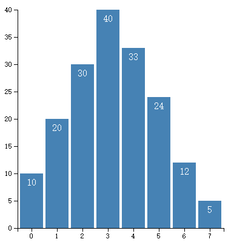
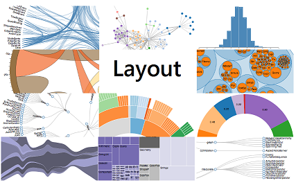
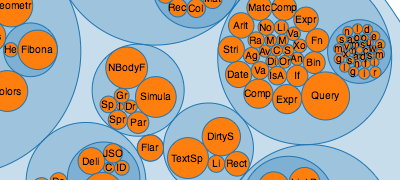

D3.js
第一章 简介和安装
D3 是什么
D3 的全称是（Data-Driven Documents），顾名思义可以知道是一个被数据驱动的文档。听名字有点抽象，说简单一点，其实就是一个 JavaScript 的函数库，使用它主要是用来做数据可视化的。如果你不知道什么是 JavaScript ，请先学习一点 JavaScript 的基础知识。
为什么要数据可视化
现在有一组数据， [4 ， 32 ， 15 ， 16 ， 42 ， 25 ] ，你能一眼看出它们的大小关系吗？当然这里的数据不算多，有那眼疾手快的家伙站出来说我能一眼看出来！但更直观的是用图形显示，如下图：
通过图形的显示，能很清楚地知道他们的大小关系。当然，D3 能力远不止如此，这只是一个很小的应用。把枯燥乏味复杂的数据，用简单明了的图形表示出来，这就是数据可视化。
D3 有多受欢迎
D3 是一个开源项目，作者是纽约时报的工程师。D3 项目的代码托管于 GitHub（一个开发管理平台，目前已经是全世界最流行的代码托管平台，云集了来自世界各地的优秀工程师）。
https://github-ranking.anytao.net/repositories
如何学习和使用 D3
以下是几个学习 D3 的站点：
- 官方网站
http://d3js.org/
包含有很多示例和 API，要想得心应手的使用 D3，熟悉 API 是避不开的。 - Mike Bostock 的博客和作品展示板
http://bost.ocks.org/mike/ - Web 数据可视化工具
https://github.com/jobbole/awesome-javascript-cn#data-visualization - 可视化技术栈及学习计划
https://segmentfault.com/a/1190000010175892 - API
https://github.com/d3/d3/wiki/API–%E4%B8%AD%E6%96%87%E6%89%8B%E5%86%8C
安装D3
D3 是一个 JavaScript 函数库，并不需要通常所说的安装。它只有一个文件，在 HTML 中引用即可。有两种方法：
（1）下载 D3.js 的文件
- d3.zip
解压后，在 HTML 文件中包含相关的 js 文件即可。
（2）直接包含网络的链接
<script src="http://d3js.org/d3.v3.min.js" charset="utf-8"></script>
bootsdn
这种方法比较简单，但要保持网络连接有效。
学习 D3 需要什么预备知识
想要通过 D3 来开启数据可视化之旅的朋友，需要什么预备知识呢？
- HTML：超文本标记语言，用于设定网页的内容
- CSS：层叠样式表，用于设定网页的样式
- JavaScript：一种直译式脚本语言，用于设定网页的行为
- DOM：文档对象模型，用于修改文档的内容和结构
- SVG：可缩放矢量图形，用于绘制可视化的图形
需要什么工具
制作网页常用的工具即可。
记事本软件：Notepad++、Editplus、Sublime Text、webstrom等，选择自己喜欢的即可。
浏览器：IE9 以上、Firefox、Chrome 等，推荐用Chrome
服务器软件：Apache、Tomcat 等
其中，服务器软件可能不是必须的，不过 D3 中有些函数需要将 HTML 文件放置于服务器目录下，才能正常使用,比如d3.csv。
第二章 第一个程序
选择元素和绑定数据是 D3 最基础的内容，本文将对其进行一个简单的介绍。
如何选择元素
在 D3 中，用于选择元素的函数有两个：
- d3.select()：是选择所有指定元素的
第一个 - d3.selectAll()：是选择指定元素的
全部
这两个函数返回的结果称为选择集。
例如，选择集的常见用法如下。
var body = d3.select("body"); //选择文档中的body元素
var p1 = body.select("p"); //选择body中的第一个p元素
var p = body.selectAll("p"); //选择body中的所有p元素
var svg = body.select("svg"); //选择body中的svg元素
var rects = svg.selectAll("rect"); //选择svg中所有的react元素
如何绑定数据
D3 有一个很独特的功能：能将数据绑定到DOM上，也就是绑定到文档上。这么说可能不好理解，例如网页中有段落元素 p 和一个整数 5，于是可以将整数 5 与 p 绑定到一起。绑定之后，当需要依靠这个数据才操作元素的时候，会很方便。
D3 中是通过以下两个函数来绑定数据的：
- datum()：绑定
一个数据到选择集上 - data()：绑定
一个数组到选择集上，数组的各项值分别与选择集的各元素绑定
<p>Apple</p>
<p>Pear</p>
<p>Banana</p>
datum()
假设有一字符串 China，要将此字符串分别与三个段落元素绑定，代码如下:
var str = "China";
d3.select("body").selectAll("p").datum(str).text(function (d, i) {
return "第 " + i + " 个元素绑定的数据是 " + d;
});
在上面用到了一个无名函数 function(d, i)。其包含两个参数，其中：
- d 代表数据，也就是与某元素绑定的数据。
- i 代表索引，代表数据的索引号，从 0 开始。
data()
有一个数组，接下来要分别将数组的各元素绑定到三个段落元素上。
var dataset = ["I like dog", "I like cat", "I like snake"];
d3.select("body").selectAll("p").data(dataset)
.text(function (d, i) {
return d;
});
第三章 选择、插入、删除元素
选择特定的元素
选择第一个p元素
// 选择第一个p元素
d3.select("body").select("p").style("color", "red")
选择三个 p 元素
// 选择三个 p 元素
d3.select("body").selectAll("p").style("color", "red");
选择第二个 p 元素
// 有不少方法，一种比较简单的是给第二个元素添加一个 id 号。
// 然后，使用 select 选择元素，注意参数中 id 名称前要加 # 号
// 选择第二个 p 元素
d3.select("body").select("#myid").style("color", "red");
选择后两个 p 元素
// 给后两个元素添加 class 选择后两个 p 元素
d3.select("body").selectAll(".myclass").style("color", "red");
其他方法
// 运用 function(d, i),参数 i 是代表索引号的，于是便可以用条件判定语句来指定执行的元素。
d3.select(" body").selectAll("p").style("color",function(d,i){
if(i==0){
return "red";
}
})
插入元素
插入元素涉及的函数有两个：
- append()：在选择集
末尾插入元素 - insert()：在选择集
前面插入元素
append
// append()
body.append("p")
.text("append p element")
.style("color","green")
insert
// insert()
// 在 body 中 id 为 myid 的元素前添加一个段落元素。
body.insert("p", "#myid")
.text("insert p element")
.style("color","blue")
删除元素
- remove
var p = body.select("#myid");
p.remove();
第四章 绘制矩形
画布
前面的处理对象都是 HTML 的文字，没有涉及图形的制作。
要绘图，首要需要的是一块绘图的“画布”。
HTML 5 提供两种强有力的“画布”: SVG 和 Canvas。
SVG 是什么
SVG，指可缩放矢量图形（Scalable Vector Graphics），是用于描述二维矢量图形的一种图形格式，是由万维网联盟制定的开放标准。 SVG 使用 XML 格式来定义图形，除了 IE8 之前的版本外，绝大部分浏览器都支持 SVG，可将 SVG 文本直接嵌入 HTML 中显示。
SVG 有如下特点：
- SVG 绘制的是矢量图，因此对图像进行放大
不会失真。 - 基于 XML，可以为每个元素添加 JavaScript
事件处理器。 - 每个图形均视为
对象，更改对象的属性，图形也会改变。 - 不适合游戏应用
- 矩形
- 圆形
- 椭圆
- 线
- 折线
- 多边形
- 路径
在 SVG 中，x 轴的正方向是水平向右，y 轴的正方向是垂直向下的。
base
<svg xmlns="http://www.w3.org/2000/svg" width="600" height="600" version="1.1">
<!-- 矩形 -->
<rect width="200" height="100" x="20" y="20" style="fill:red;stroke:blue;stroke-width:4"/>
<!-- rx 和 ry 属性可使矩形产生圆角 -->
<rect width="200" height="100" x="250" y="20" rx="20" ry="10" style="fill:red;stroke:blue;stroke-width:4"/>
<!-- 圆 -->
<circle cx="100" cy="280" r="80" style="fill:yellow"/>
<!-- 椭圆 -->
<!-- RX属性定义的水平半径 -->
<!-- RY属性定义的垂直半径 -->
<ellipse cx="330" cy="280" rx="100" ry="80" style="fill:yellow"/>
<!-- 直线 -->
<line x1="0" x2="600" y1="0" y2="360" style="stroke:#000;stroke-width:4"/>
<!-- 多边形 -->
<!-- points 属性定义多边形每个角的 x 和 y 坐标 -->
<polygon points="100,20 20,90 20,200" style="fill:green;stroke:orange;stroke-width:4"/>
<!-- 曲线 -->
<polyline points="100,20 20,90 20,200" style="fill:green;stroke:orange;stroke-width:4" transform="translate(100,0)"/>
</svg>
path
给出一个坐标点，在坐标点前面添加一个英文字母，表示如何运动到此坐标点。
<svg xmlns="http://www.w3.org/2000/svg" version="1.1">
<path d="M150 0 L75 200 L225 200 Z" />
</svg>
添加画布
使用 D3 在 body 元素中添加 svg 的代码如下。
var width = 300; //画布的宽度
var height = 300; //画布的高度
var svg = d3.select("body") //选择文档中的body元素
.append("svg") //添加一个svg元素
.attr("width", width) //设定宽度
.attr("height", height); //设定高度
绘制矩形
在 SVG 中，矩形的元素标签是 rect
x：矩形左上角的 x 坐标
y：矩形左上角的 y 坐标
width：矩形的宽度
height：矩形的高度
var dataset = [250, 210, 170, 130, 90]; //数据（表示矩形的宽度）
var rectHeight = 25; //每个矩形所占的像素高度(包括空白)
svg.selectAll("rect") // 选择svg内所有的矩形
.data(dataset) // 绑定数组
.enter() // 指定选择集的enter部分
.append("rect") // 添加足够数量的矩形元素
.attr("x", 20) // 分别给各元素的属性赋值
.attr("y", function (d, i) {
return i * rectHeight;
})
.attr("width", function (d) {
return d;
})
.attr("height", rectHeight - 2)
.attr("fill", "steelblue");
下面这段代码以后会常常出现在 D3 的代码中，请务必牢记。
当有数据，而没有足够图形元素的时候，使用此方法可以添加足够的元素。
svg.selectAll("rect") //选择svg内所有的矩形
.data(dataset) //绑定数组
.enter() //指定选择集的enter部分
.append("rect") //添加足够数量的矩形元素
第五章 比例尺的使用
上一章里曾经提到过直接用数值的大小来代表像素不是一种好方法，本章正是要解决此问题。
为什么需要比例尺
前面制作了一个柱形图，当时有一个数组：
var dataset = [ 250 , 210 , 170 , 130 , 90 ];
绘图时，直接使用 250 给矩形的宽度赋值，即矩形的宽度就是 250 个像素。
此方式非常具有局限性，如果数值过大或过小，例如：
var dataset_1 = [ 2.5 , 2.1 , 1.7 , 1.3 , 0.9 ];
var dataset_2 = [ 2500, 2100, 1700, 1300, 900 ];
对以上两个数组，绝不可能用 2.5 个像素来代表矩形的宽度，那样根本看不见；也不可能用 2500 个像素来代表矩形的宽度，因为画布没有那么长。
将某一区域的值映射到另一区域，其大小关系不变
有哪些比例尺
比例尺，很像数学中的函数。对于y=f(x)，当 x 的值确定时，y 的值也就确定了。
在数学中，x 的范围被称为定义域，y 的范围被称为值域。
D3 的比例尺中分别被称为 domain 和 range，只需要指定 domain 和 range 的范围，就可以定义一个比例尺了。
D3 提供了多种比例尺，下面介绍最常用的两种。
线性比例尺
线性比例尺，能将一个连续的区间，映射到另一区间。
y= kx + b
将 dataset 中最小的值，映射成 0；将最大的值，映射成 300。
var dataset = [1.2, 2.3, 0.9, 1.5, 3.3];
var min = d3.min(dataset); // 求数组的最小值
var max = d3.max(dataset); // 求数组的最大值
var linear = d3.scale.linear() // 返回一个线性比例尺
.domain([min, max]) // 定义域
.range([0, 300]); // 值域
linear(0.9); //返回 0
linear(2.3); //返回 175
linear(3.3); //返回 300
序数比例尺
有时候，定义域和值域不一定是连续的。例如，有两个数组：
var index = [0, 1, 2, 3, 4];
var color = ["red", "blue", "green", "yellow", "black"];
规定0 对应颜色 red，1 对应 blue，依次类推。这时候就可以用序列比例尺。
var ordinal = d3.scale.ordinal()
.domain(index)
.range(color);
ordinal(0); //返回 red
ordinal(2); //返回 green
ordinal(4); //返回 black
颜色比例尺
要给图表设定颜色，每次手动设置非常麻烦，这时候可以使用颜色比例尺。它们的颜色都结果精心的色彩搭配，相当美观。
- category10 10种颜色
- category20() 20种颜色
- category20b() 20种颜色
- category20c() 20种颜色
<html>
<head>
<meta charset="utf-8">
<title>颜色比例尺</title>
</head>
<body>
<script src="https://cdn.bootcss.com/d3/3.5.15/d3.js"></script>
<script>
var width = 1000;
var height = 600;
var dataset = d3.range(15); // 返回[0, 1, 2, 3, 4, 5, 6, 7, 8, 9, 10, 11, 12, 13, 14]
var color = d3.scale.category10();
var svg = d3.select("body").append("svg")
.attr("width", width)
.attr("height", height);
var circle = svg.selectAll("circle")
.data(dataset)
.enter()
.append("circle")
.attr("cx", function (d, i) {
return 20 + i * 60;
})
.attr("cy", 100)
.attr("r", 15)
.attr("fill", function (d, i) {
return color(i);
});
</script>
</body>
</html>
给柱形图添加比例尺
<html>
<head>
<meta charset="utf-8">
<title>添加坐标轴</title>
</head>
<body>
<script src="https://cdn.bootcss.com/d3/3.5.15/d3.js"></script>
<script>
var width = 300; //画布的宽度
var height = 300; //画布的高度
var svg = d3.select("body") //选择文档中的body元素
.append("svg") //添加一个svg元素
.attr("width", width) //设定宽度
.attr("height", height); //设定高度
var dataset = [250, 210, 170, 130, 90]; //数据（表示矩形的宽度）
var linear = d3.scale.linear()
.domain([0, d3.max(dataset)])
.range([0, 100]);
var rectHeight = 25; //每个矩形所占的像素高度(包括空白)
svg.selectAll("rect") // 选择svg内所有的矩形
.data(dataset) // 绑定数组
.enter() // 指定选择集的enter部分
.append("rect") // 添加足够数量的矩形元素
.attr("x", 20) // 添加了元素之后，就需要分别给各元素的属性赋值
.attr("y", function (d, i) {
return i * rectHeight;
})
.attr("width", function (d) {
return linear(d); // //在这里用比例尺
})
.attr("height", rectHeight - 2)
.attr("fill", "steelblue");
</script>
</body>
</html>
第六章 坐标轴
坐标轴，是可视化图表中经常出现的一种图形，由一些列线段和刻度组成。坐标轴在 SVG 中是没有现成的图形元素的，需要用其他的元素组合构成。
在 SVG 画布的预定义元素里，有六种基本图形：
- 矩形
- 圆形
- 椭圆
- 线段
- 折线
- 多边形
另外，还有一种比较特殊，也是功能最强的元素：
- 路径
画布中的所有图形，都是由以上七种元素组成。
<g>
<!-- 第一个刻度 -->
<g>
<line></line> <!-- 第一个刻度的直线 -->
<text></text> <!-- 第一个刻度的文字 -->
</g>
<!-- 第二个刻度 -->
<g>
<line></line> <!-- 第二个刻度的直线 -->
<text></text> <!-- 第二个刻度的文字 -->
</g>
...
<!-- 坐标轴的轴线 -->
<path></path>
</g>
分组元素 ，是 SVG 画布中的元素，意思是 group。此元素是将其他元素进行组合的容器，在这里是用于将坐标轴的其他元素分组存放。
如果需要手动添加这些元素就太麻烦了，为此，D3 提供了一个组件：d3.svg.axis()。
定义坐标轴
要生成坐标轴，需要用到比例尺，它们二者经常是一起使用的。在上一章的数据和比例尺的基础上，添加一个坐标轴的组件。
//数据
var dataset = [ 2.5 , 2.1 , 1.7 , 1.3 , 0.9 ];
//定义比例尺
var linear = d3.scale.linear()
.domain([0, d3.max(dataset)])
.range([0, 250]);
var axis = d3.svg.axis()
.scale(linear) // 指定比例尺
.orient("bottom") // 指定刻度的方向
.ticks(7); // 指定刻度的数量
在 SVG 中添加坐标轴
定义了坐标轴之后，只需要在 SVG 中添加一个分组元素 ，再将坐标轴的其他元素添加到这个 里即可。代码如下：
svg.append("g")
.call(axis);
上面有一个 call() 函数，其参数是前面定义的坐标轴 axis。
设定坐标轴的样式和位置

默认的坐标轴样式不太美观,需要分别定义了类 axis 下的 path、line、text 元素的样式
<style>
.axis path,
.axis line{
fill: none;
stroke: black;
shape-rendering: crispEdges;
}
.axis text {
font-family: sans-serif;
font-size: 11px;
}
</style>
接下来，只需要将坐标轴的类设定为 axis 即可。
svg.append("g")
.attr("class","axis")
.attr("transform","translate(20,130)")
.call(axis);
坐标轴的位置，可以通过 transform 属性来设定。
第七章 完整的柱形图
一个完整的柱形图包含三部分：矩形、文字、坐标轴。本章将对前几章的内容进行综合的运用,对内容进行综合的运用，制作一个实用的柱形图，内容包括：选择集、数据绑定、比例尺、坐标轴等内容。

添加 SVG 画布
//画布大小
var width = 400;
var height = 400;
//在 body 里添加一个 SVG 画布
var svg = d3.select("body")
.append("svg")
.attr("width", width)
.attr("height", height);
//画布周边的空白
// 定义了一个 padding，是为了给 SVG 的周边留一个空白，最好不要将图形绘制到边界上
var padding = {left:30, right:30, top:20, bottom:20};
定义数据和比例尺
//定义一个数组
var dataset = [10, 20, 30, 40, 33, 24, 12, 5];
// x轴的比例尺
// x轴使用序数比例尺
var xScale = d3.scale.ordinal()
.domain(d3.range(dataset.length))
.rangeRoundBands([0, width - padding.left - padding.right]); // 指定输出范围为连续区间，区间段的起点均为整数
// y轴的比例尺
// y轴使用线性比例尺
var yScale = d3.scale.linear()
.domain([0,d3.max(dataset)])
.range([height - padding.top - padding.bottom, 0]); // 反过来
定义坐标轴
//定义x轴
var xAxis = d3.svg.axis()
.scale(xScale)
.orient("bottom"); // x 轴刻度的方向向下
//定义y轴
var yAxis = d3.svg.axis()
.scale(yScale)
.orient("left"); // y 轴的向左
添加矩形和文字元素
//矩形之间的空白
var rectPadding = 4;
//添加矩形元素
var rects = svg.selectAll(".MyRect")
.data(dataset)
.enter()
.append("rect")
.attr("class", "MyRect")
.attr("transform", "translate(" + padding.left + "," + padding.top + ")")
.attr("x", function (d, i) {
return xScale(i) + rectPadding / 2;
})
.attr("y", function (d) {
return yScale(d);
})
.attr("width", xScale.rangeBand() - rectPadding)
.attr("height", function (d) {
return height - padding.top - padding.bottom - yScale(d);
});
//添加文字元素
var texts = svg.selectAll(".MyText")
.data(dataset)
.enter()
.append("text")
.attr("class", "MyText")
.attr("transform", "translate(" + padding.left + "," + padding.top + ")")
.attr("x", function (d, i) {
return xScale(i) + rectPadding / 2;
})
.attr("y", function (d) {
return yScale(d);
})
.attr("dx", function () { // 是文本相对基点x方向右偏移的距离
return (xScale.rangeBand() - rectPadding) / 2;
})
.attr("dy", function (d) { // 是文本相对基点y方向下偏移的距离
return 20;
})
.text(function (d) {
return d;
});
添加坐标轴的元素
//添加x轴
svg.append("g")
.attr("class", "axis")
.attr("transform", "translate(" + padding.left + "," + (height - padding.bottom) + ")")
.call(xAxis);
//添加y轴
svg.append("g")
.attr("class", "axis")
.attr("transform", "translate(" + padding.left + "," + padding.top + ")")
.call(yAxis);
第八章 动画效果
什么是动态效果
前面制作的图表是一蹴而就地出现，然后绘制完成后不再发生变化的，这是
静态的图表。
动态的图表，是指图表在某一时间段会发生某种变化，可能是形状、颜色、位置等。
例如，有一个圆，圆心为 (100, 100)。现在我们希望圆的 x 坐标从 100 移到 300，并且移动过程在 2 秒的时间内发生。
这种时候就需要用到动态效果，在 D3 里我们称之为过渡（transition）。
实现动态的方法
D3 提供了 4 个方法用于实现图形的过渡：从状态 A 变为状态 B。
transition()
启动过渡效果。
其前后是图形变化前后的状态（形状、位置、颜色等等），例如：.attr("fill","red") //初始颜色为红色.transition() //启动过渡.attr("fill","steelblue") //终止颜色为铁蓝色D3 会自动对两种颜色（红色和铁蓝色）之间的颜色值（RGB值）进行插值计算，得到过渡用的颜色值。
duration()
指定过渡的持续时间，单位为毫秒。
如 duration(2000) ，指持续 2000 毫秒，即 2 秒。ease()
指定过渡的方式，常用的有- linear：普通的线性变化
- circle：慢慢地到达变换的最终状态
- elastic：带有弹跳的到达最终状态
- bounce：在最终状态处弹跳几次
调用时，格式形如： ease(“bounce”)
delay()
指定延迟的时间，表示一定时间后才开始转变，单位同样为毫秒。此函数可以对整体指定延迟，也可以对个别指定延迟。
对整体指定时
.transition()
.duration(1000)
.delay(500)
如此，图形整体在延迟 500 毫秒后发生变化，变化的时长为 1000 毫秒。因此，过渡的总时长为1500毫秒。
对个别图形进行指定时
.transition()
.duration(1000)
.delay(funtion(d,i){
return 200*i;
})
如此，假设有 10 个元素，那么第 1 个元素延迟 0 毫秒（因为 i = 0），第 2 个元素延迟 200 毫秒，第 3 个延迟 400 毫秒，依次类推….整个过渡的长度为 200 * 9 + 1000 = 2800 毫秒。
实现简单的动态效果
在 SVG 画布里添加三个圆，圆出现之后，立即启动过渡效果。
第一个圆，要求移动 x 坐标。
第二个圆，要求既移动 x 坐标，又改变颜色。
第三个圆，要求既移动 x 坐标，又改变颜色，还改变半径
var circle1 = svg.append("circle")
.attr("cx", 100)
.attr("cy", 100)
.attr("r", 45)
.style("fill", "green");
//在1秒（1000毫秒）内将圆心坐标由100变为300
circle1.transition()
.duration(1000)
.attr("cx", 300);
var circle2 = svg.append("circle")
.attr("cx", 100)
.attr("cy", 200)
.attr("r", 45)
.style("fill", "green");
//在1.5秒（1500毫秒）内将圆心坐标由100变为300，
//将颜色从绿色变为红色
circle2.transition()
.duration(1500)
.attr("cx", 300)
.style("fill", "red");
var circle3 = svg.append("circle")
.attr("cx", 100)
.attr("cy", 300)
.attr("r", 45)
.style("fill", "green");
//在2秒（2000毫秒）内将圆心坐标由100变为300
//将颜色从绿色变为红色
//将半径从45变成25
//过渡方式采用bounce（在终点处弹跳几次）
circle3.transition()
.duration(2000)
.ease("bounce")
.attr("cx", 300)
.style("fill", "red")
.attr("r", 25);
给柱形图加上动态效果
在添加文字元素和矩形元素的时候，启动过渡效果，让各柱形和文字缓慢升至目标高度，并且在目标处跳动几次。两者发生变化的都是 y 坐标。写清楚起始状态和终止状态。
以下是为文字添加过渡效果的代码：
.attr("y",function(d){
var min = yScale.domain()[0];
return yScale(min);
})
.transition()
.delay(function(d,i){
return i * 200;
})
.duration(2000)
.ease("bounce")
.attr("y",function(d){
return yScale(d);
});
第九章 理解 Update、Enter、Exit
前几章里，反复出现了形如以下的代码。当时并没有深究这段代码是什么意思，本章将对此进行讲解。
svg.selectAll("rect") //选择svg内所有的矩形
.data(dataset) //绑定数组
.enter() //指定选择集的enter部分
.append("rect") //添加足够数量的矩形元素
什么是 Update、Enter、Exit
以下面这个例子为例，如果数组为 [3, 6, 9, 12, 15]，将此数组绑定到三个 p 元素的选择集上。
- update 部分的处理办法一般是：更新属性值。
- enter 部分的处理办法一般是：添加元素后，赋予属性值。
- exit 部分的处理办法一般是：删除元素（remove）。
Update 和 Enter 的使用
var dataset = [ 3 , 6 , 9 , 12 , 15 ];
//选择body中的p元素
var p = d3.select("body").selectAll("p");
//获取update部分
var update = p.data(dataset);
//获取enter部分
var enter = update.enter();
//update部分的处理：更新属性值
update.text(function(d){
return "update " + d;
});
//enter部分的处理：添加元素后赋予属性值
enter.append("p")
.text(function(d){
return "enter " + d;
});
结果如下图，update 部分和 enter 部分被绑定的数据很清晰地表示了出来。
Update 和 Exit 的使用
当对应的元素过多时 （ 绑定数据数量 < 对应元素 ），需要删掉多余的元素。
var dataset = [ 3 ];
//选择body中的p元素
var p = d3.select("body").selectAll("p");
//获取update部分
var update = p.data(dataset);
//获取exit部分
var exit = update.exit();
//update部分的处理：更新属性值
update.text(function(d){
return "update " + d;
});
//exit部分的处理：修改p元素的属性
exit.text(function(d){
return "exit";
});
//exit部分的处理通常是删除元素
// exit.remove();

第十章 交互操作
对可视化图表来说，交互能使图表更加生动，能表现更多内容。例如，拖动图表中某些图形、鼠标滑到图形上出现提示框、用触屏放大或缩小图形等等。
用户用于交互的工具一般有三种：鼠标、键盘、触屏。
如何添加交互
对某一元素添加交互操作十分简单，代码如下：
var circle = svg.append("circle");
circle.on("click", function(){
//在这里添加交互内容
});
on() 的第一个参数是
监听的事件，第二个参数是监听到事件后响应的内容，第二个参数是一个函数。
鼠标常用的事件有:
- click：鼠标单击某元素时，相当于 mousedown 和 mouseup 组合在一起。
- mouseover：光标放在某元素上。
- mouseout：光标从某元素上移出来时。
- mousemove：鼠标被移动的时候。
- mousedown：鼠标按钮被按下。
- mouseup：鼠标按钮被松开。
- dblclick：鼠标双击。
键盘常用的事件有三个：
- keydown：当用户按下任意键时触发，按住不放会重复触发此事件。该事件不会区分字母的大小写，例如“A”和“a”被视为一致。
- keypress：当用户按下字符键（大小写字母、数字、加号、等号、回车等）时触发，按住不放会重复触发此事件。该事件区分字母的大小写。
keyup：当用户释放键时触发，不区分字母的大小写。
触屏常用的事件有三个：
- touchstart：当触摸点被放在触摸屏上时。
- touchmove：当触摸点在触摸屏上移动时。
- touchend：当触摸点从触摸屏上拿开时。
带有交互的柱形图
将柱形图的部分代码修改成如下代码：
填充颜色不要写在CSS里,因为CSS属性的级别比attr()的要高。
当某个事件被监听到时，D3 会把当前的事件存到 d3.event 对象，里面保存了当前事件的各种参数。
//添加矩形元素
var rects = svg.selectAll(".MyRect")
.data(dataset)
.enter()
.append("rect")
// .attr("class", "MyRect") //
.attr("transform", "translate(" + padding.left + "," + padding.top + ")")
.attr("x", function (d, i) {
return xScale(i) + rectPadding / 2;
})
.attr("y", function (d) {
return yScale(d);
})
.attr("width", xScale.rangeBand() - rectPadding)
.attr("height", function (d) {
return height - padding.top - padding.bottom - yScale(d);
})
.attr("fill", "steelblue") // 填充颜色不要写在CSS里
.on("mouseover", function (d, i) {
d3.select(this) // d3.select(this)，表示选择当前的元素
.attr("fill", "yellow");
// console.log(d3.event.screenX);
})
.on("mouseout", function (d, i) {
d3.select(this)
.transition()
.duration(500)
.attr("fill", "steelblue");
});
第十一章 布局

布局是什么
布局，英文是 Layout。布局是 D3 中一个十分重要的概念。D3 与其它很多可视化工具不同，相对来说较底层，对初学者来说不太方便，但是一旦掌握了，就比其他工具更加得心应手。
D3绘图：
将数据变为图表，分为两步：计算和绘制。
计算是指算出节点的位置、线段的端点、弧线的角度等。绘制是将计算所得的节点、线段等元素绘制在网页上。
大部分绘图工具:
将计算和绘制整合到一起。
D3的优势
极大提高了设计的自由度
如何理解布局
布局可以理解为数据转换
比如，有数据[10,20,30,40],要将其画成饼状图，需要将数据转换成扇形的起始角度和终止角度。
- 10 -> 起始角度0，终止角度36
- 20 -> 起始角度36 ,终止角度108
布局有哪些
D3 总共提供了 12 个布局：饼状图（Pie）、力导向图（Force）、弦图（Chord）、树状图（Tree）、集群图（Cluster）、捆图（Bundle）、打包图（Pack）、直方图（Histogram）、分区图（Partition）、堆栈图（Stack）、矩阵树图（Treemap）、层级图（Hierarchy）。
饼状图（Pie）
力导向图（Force）
弦图（Chord）
树状图（Tree）
集群图（Cluster）
捆图（Bundle）
打包图（Pack）

直方图（Histogram）
分区图（Partition）
堆栈图（Stack）
矩阵树图（Treemap）
第十二章 饼状图的制作
展示离散数据点百分占比或者大小比较
数据
var dataset = [ 30 , 10 , 43 , 55 , 13 ];
布局(数据转换)
var pie = d3.layout.pie();
var piedata = pie(dataset);

千万记住：布局不是直接绘图，而是为了得到绘图所需的数据。
绘制图形
SVG 有一个元素，叫做路径 path，是 SVG 中功能最强的元素，它可以表示其它任意的图形。绘制饼状图需要使用弧生成器。它可以生成弧的路径。
弧生成器返回的结果赋值给 arc。此时，arc 可以当做一个函数使用，把 piedata 作为参数传入，即可得到路径值。
var outerRadius = 150; // 外半径
var innerRadius = 0; // 内半径，为0则中间没有空白
var arc = d3.svg.arc() // 弧生成器
.innerRadius(innerRadius) //设置内半径
.outerRadius(outerRadius); //设置外半径
在 svg 里添加足够数量的分组元素（g），每一个分组用于存放一段弧的相关元素。
var arcs = svg.selectAll("g")
.data(piedata)
.enter()
.append("g")
.attr("transform","translate("+ (width/2) +","+ (width/2) +")");
接下来对每个 g 元素，添加 path 。
arcs.append("path")
.attr("fill",function(d,i){
return color(i); // 颜色比例尺
})
// .attr("d", function (d) {
// return arc(d); // 使用弧生成器获取路径
// });
.attr("d", arc); //s arc本身就是一个函数,可以简写为arc
然后在每一个弧线中心添加文本。
arc.centroid(d) 能算出弧线的中心坐标，返回一个[x,y]数组。
text-anchor文本相对基点（x，y）的位置
- start 文字在基点的右上方
- middle 文字在基点的正上方
- end 文字在基点的左上方
arcs.append("text")
.attr("transform",function(d){
return "translate(" + arc.centroid(d) + ")"; // 算出弧线的中心
})
.attr("text-anchor","middle")
.text(function(d){
return d.data; // d.data，而不是d，因为被绑定的数据是对象
});
第十三章 力导向图
力导向图（Force-Directed Graph），是绘图的一种算法。在二维或三维空间里配置节点，节点之间用线连接，称为连线。各连线的长度几乎相等，且尽可能不相交。节点和连线都被施加了力的作用，力是根据节点和连线的相对位置计算的。根据力的作用，来计算节点和连线的运动轨迹，并不断降低它们的能量，最终达到一种能量很低的安定状态。
适合网络型、社交型图数据的可视化展示。
数据
节点（nodes）和连线（edges）的数组
var nodes = [ { name: "桂林" }, { name: "广州" },
{ name: "厦门" }, { name: "杭州" },
{ name: "上海" }, { name: "青岛" },
{ name: "天津" } ];
var edges = [ { source : 0 , target: 1 } , { source : 0 , target: 2 } ,
{ source : 0 , target: 3 } , { source : 1 , target: 4 } ,
{ source : 1 , target: 5 } , { source : 1 , target: 6 } ];
布局(数据转换)
定义一个力导向图的布局
var force = d3.layout.force()
.nodes(nodes) //指定节点数组
.links(edges) //指定连线数组
.size([width,height]) //指定作用域范围
.linkDistance(150) //指定连线长度
.charge([-400]); //相互之间的作用力
使力学作用生效：
force.start(); // 开始计算布局
数据变换前后
节点
转换后，节点对象里多了一些变量。其意义如下：
- index：节点的索引号
- px, py：节点上一个时刻的坐标
- x, y：节点的当前坐标
- weight：节点的权重
连线的变化
可以看到，连线的两个节点序号，分别变成了对应的节点对象。
绘制
分别绘制三种图形元素：
- line，线段，表示连线。
- circle，圆，表示节点。
- text，文字，描述节点。
//添加连线
var svg_edges = svg.selectAll("line")
.data(edges)
.enter()
.append("line")
.style("stroke","#ccc")
.style("stroke-width",1);
var color = d3.scale.category20();
//添加节点
var svg_nodes = svg.selectAll("circle")
.data(nodes)
.enter()
.append("circle")
.attr("r",20)
.style("fill",function(d,i){
return color(i);
})
.call(force.drag); //使得节点能够拖动
//添加描述节点的文字
var svg_texts = svg.selectAll("text")
.data(nodes)
.enter()
.append("text")
.style("fill", "black")
.attr("dx", 20)
.attr("dy", 8)
.text(function(d){
return d.name;
});
由于力导向图是不断运动的，每一时刻都在发生更新，因此，必须不断更新节点和连线的位置。还需要设置一个监听器，为tick事件设置监听器即可。
force.on("tick", function () { // 对运动中的每一步进行监听
// 更新连线坐标
svg_edges.attr("x1", function (d) { return d.source.x; })
.attr("y1", function (d) { return d.source.y; })
.attr("x2", function (d) { return d.target.x; })
.attr("y2", function (d) { return d.target.y; });
//更新节点坐标
svg_nodes.attr("cx", function (d) { return d.x; })
.attr("cy", function (d) { return d.y; });
//更新文字坐标
svg_texts.attr("x", function (d) { return d.x; })
.attr("y", function (d) { return d.y; });
});
第十四章 树状图
树状图，可表示节点之间的包含与被包含关系。
数据
初始数据先写在一个 JSON 文件中，再用 D3 来读取。
JSON 教程
{
"name":"中国",
"children":
[
{
"name":"浙江" ,
"children":
[
{"name":"杭州" },
{"name":"宁波" },
{"name":"温州" },
{"name":"绍兴" }
]
},
{
"name":"广西" ,
"children":
[
{
"name":"桂林",
"children":
[
{"name":"秀峰区"},
{"name":"叠彩区"},
{"name":"象山区"},
{"name":"七星区"}
]
},
{"name":"南宁"},
{"name":"柳州"},
{"name":"防城港"}
]
},
{
"name":"黑龙江",
"children":
[
{"name":"哈尔滨"},
{"name":"齐齐哈尔"},
{"name":"牡丹江"},
{"name":"大庆"}
]
},
{
"name":"新疆" ,
"children":
[
{"name":"乌鲁木齐"},
{"name":"克拉玛依"},
{"name":"吐鲁番"},
{"name":"哈密"}
]
}
]
}
布局（数据转换）
定义一个树图布局：
separation()的参数是function(a,b)，a,b表示两个相邻节点 如果a节点和b节点的父节点是相同的，a和b的间隔是1，否则是2。
var tree = d3.layout.tree()
.size([width, height-200]) // size()：设定尺寸，即转换后的各节点的坐标在哪一个范围内。
.separation(function(a, b) { return (a.parent == b.parent ? 1 : 2); });
读取数据
// 读取的文件内容在root中
d3.json("city_tree.json", function(error, root) {
var nodes = tree.nodes(root); // 计算得到节点数组，保存在变量nodes中
var links = tree.links(nodes); // 得到连线数组，保存在links中
console.log(nodes);
console.log(links);
}
输出节点的结果：
nodes 中有各个节点的子节点（children）、深度（depth）、名称（name）、位置（x，y）信息。
输出连线的结果：
links 中有连线两端（ source , target ）的节点信息。
绘制
d3.svg.diagonal() 对角线生成器，只需要输入两个顶点坐标，即可生成一条贝塞尔曲线。
创建一个对角线生成器：
projection() 是一个点变换器，默认是 [ d.x , d.y ]，即保持原坐标不变，如果写成 [ d.y , d.x ] ，即是说对任意输入的顶点，都交换 x 和 y 坐标。这里是把由上到下的树改变为横向的树。
var diagonal = d3.svg.diagonal()
.projection(function(d) { return [d.y, d.x]; });
分别绘制三种图形元素：
- line，线段，表示连线。
- circle，圆，表示节点。
- text，文字，描述节点。
// line
var link = svg.selectAll(".link")
.data(links)
.enter()
.append("path")
.attr("class", "link")
.attr("d", diagonal); //使用对角线生成器
// node包含circel和text
var node = svg.selectAll(".node")
.data(nodes)
.enter()
.append("g")
.attr("class", "node")
.attr("transform", function (d) {
return "translate(" + d.y + "," + d.x + ")"; // 平移
})
node.append("circle")
.attr("r", 4.5);
node.append("text")
.attr("dx", function (d) {
return d.children ? -8 : 8; // 如果某节点是叶子节点，则节点文字在圆圈的右边，否则在左边
})
.attr("dy", 3)
.style("text-anchor", function (d) {
return d.children ? "end" : "start"; // 如果某节点是叶子节点，则节点文字在圆圈的右边，否则在左边
})
.text(function (d) {
return d.name;
});
第十五章 中国地图
GeoJSON 是用于描述地理空间信息的数据格式。GeoJSON 不是一种新的格式，其语法规范是符合 JSON 格式的，只不过对其名称进行了规范，专门用于表示地理信息。
数据
china.geojson
投影函数
由于 GeoJSON 文件中的地图数据，都是经度和纬度的信息。它们都是三维的，而要在网页上显示的是二维的，所以要设定一个投影函数来转换经度纬度。
// 投影函数
var projection = d3.geo.mercator()
.center([107, 31]) // 定地图的中心位置，[107,31] 指的是经度和纬度。
.scale(850) // 定放大的比例
.translate([width / 2, height / 2]); // 设定平移
地理路径生成器
生成path 元素的路径值
// 地理路径生成器
var path = d3.geo.path()
.projection(projection); // 设定路径生成器的投影函数
向服务器请求文件并绘制地图
// 向服务器请求文件并绘制地图
// 所有读取到的信息会被放到root中
d3.json("china.geojson", function (error, root) {
if (error)
return console.error(error);
console.log(root.features);
svg.selectAll("path") // 每一个<path>代表一个省
.data(root.features)
.enter()
.append("path")
.attr("stroke", "#000")
.attr("stroke-width", 1)
.attr("fill", function (d, i) {
return color(i);
})
.attr("d", function (d) {
path(d);
})
// .attr("d", path) // 使用地理路径生成器
.on("mouseover", function (d, i) {
d3.select(this)
.attr("fill", "yellow");
})
.on("mouseout", function (d, i) {
d3.select(this)
.attr("fill", color(i));
});
});
附件：